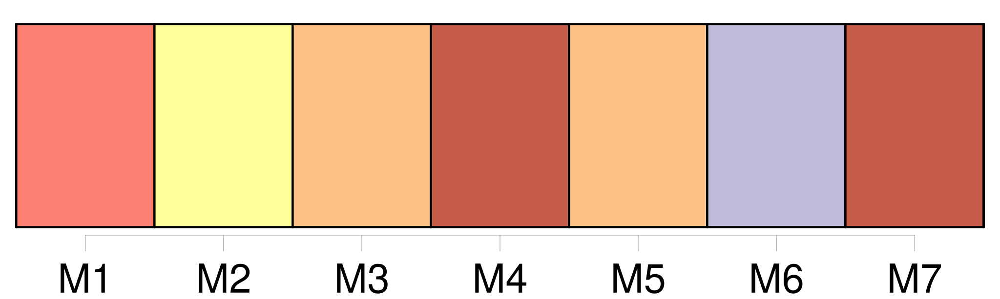
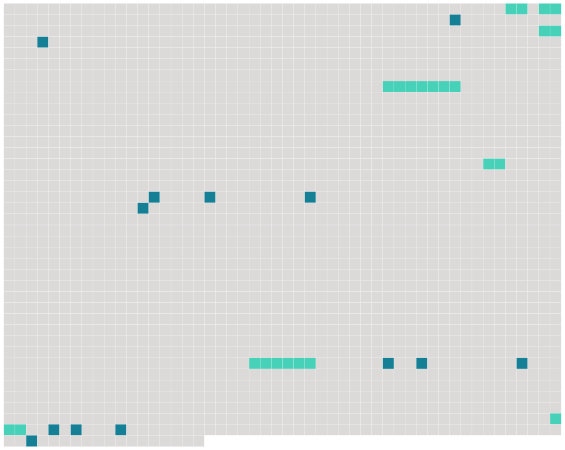

Longueur nb maillons : 20 mentions |
 |
Il habitait, au milieu des bois, un petit manoir, dont il avait hérité ; et bien qu'il connût toute la noblesse du département et rencontrât tous ses représentants mâles dans les rendez -vous de chasse, il ne fréquentait assidûment qu' [une famille] : [les Courville] , des voisins aimables, alliés à sa race depuis des siècles. Dans cette maison il était choyé, aimé, dorloté, et il disait : « Si je n'étais pas chasseur, je voudrais ne point [vous] quitter. [3 phrases] Le baron de Coutelier allait souvent dîner chez [ses amis] , surtout pour [leur] raconter ses coups de fusil. [10 phrases]
» [12 phrases] Comme il allait mieux et recommençait à chasser au marais, il vint un soir dîner chez [ses amis] ; mais il n'avait plus son entrain ni sa gaieté. [4 phrases] Comment n'y avait [-on] pas encore songé??
[On] chercha toute la soirée parmi les veuves qu' [on] connaissait, et le choix s'arrêta sur une femme de quarante ans, encore jolie, assez riche, de belle humeur et bien portante, qui s'appelait Mme Berthe Vilers. [On] l'invita à passer un mois au château. [45 phrases] [Les Courville, étonnés, inquiets] , ne savaient que dire à [leur] amie qu' [ils] avaient prévenue de la démarche du baron.
[On] envoyait tous les deux jours prendre chez lui de ses nouvelles ; aucun de ses serviteurs n'en avait reçu. [21 phrases] [Toute la famille] délibéra, [discuta] , [supposa] mille choses. [On] conclut qu'un grand mystère était caché dans la vie du baron, qu'il avait peut-être des enfants naturels, une vieille liaison.
Enfin l'affaire paraissait grave ; et pour ne point entrer en des complications difficiles, [on] prévint habilement Mme Vilers, qui s'en retourna veuve comme elle était venue. |
 |
Il est possible de télécharger la ressource sur la page Ortolang |
Si vous avez des questions ou vous voyez des erreurs, merci d'envoyer un mail à silvia.federzoni89@gmail.com |